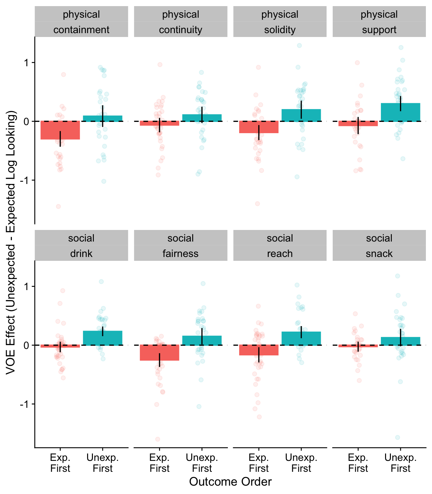
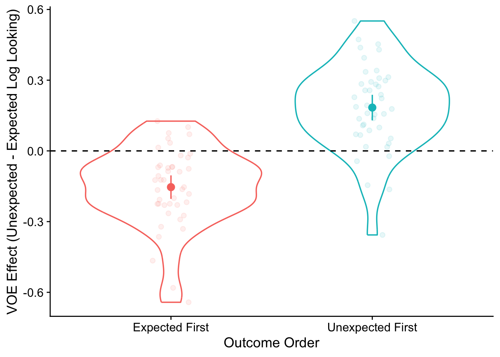
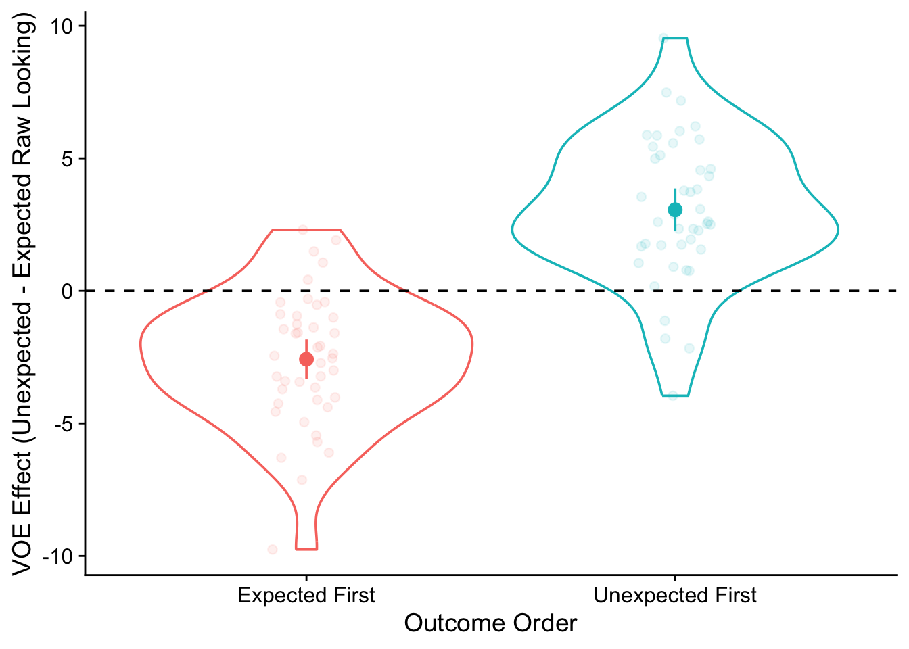
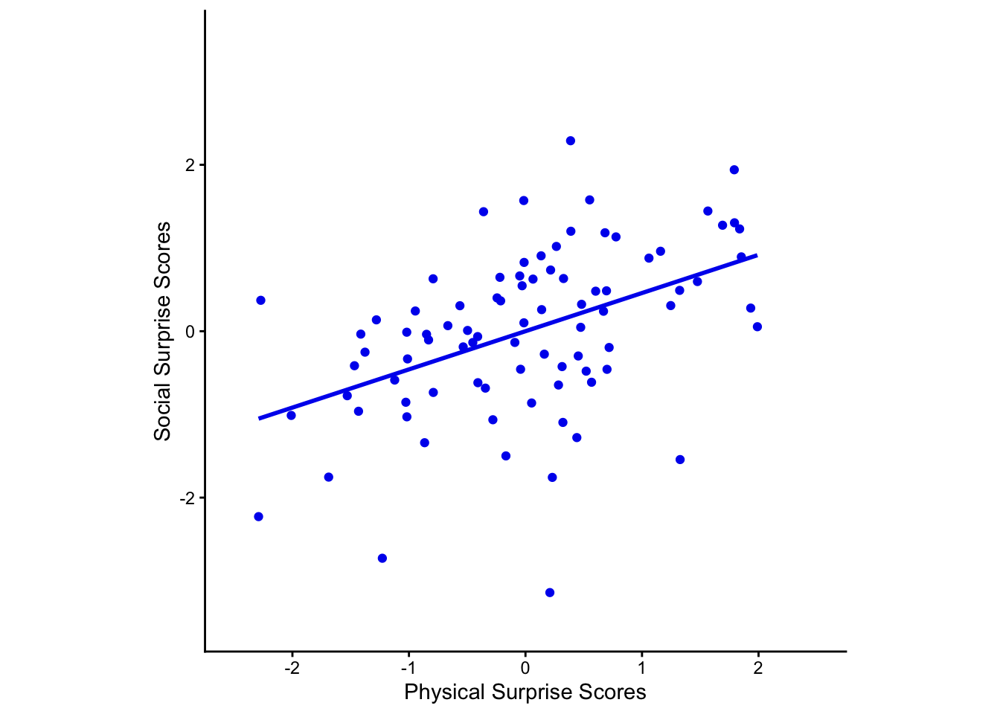
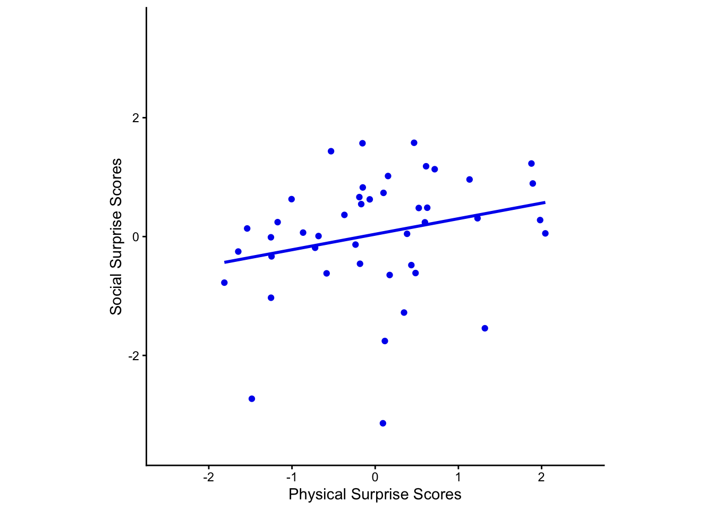
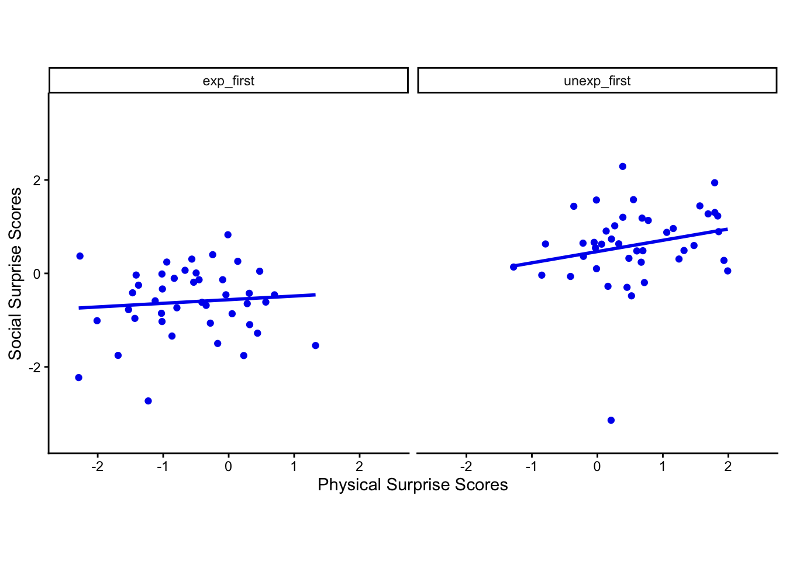
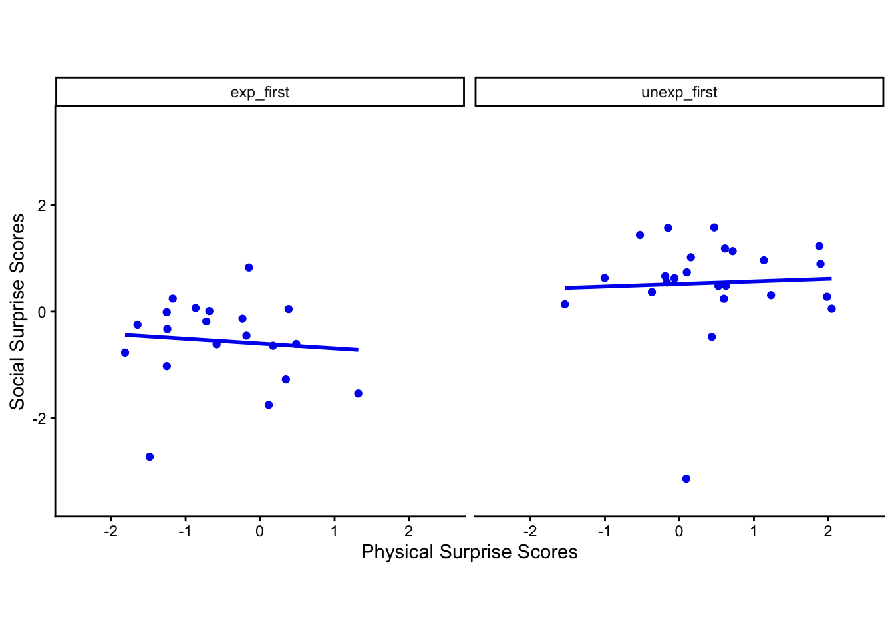
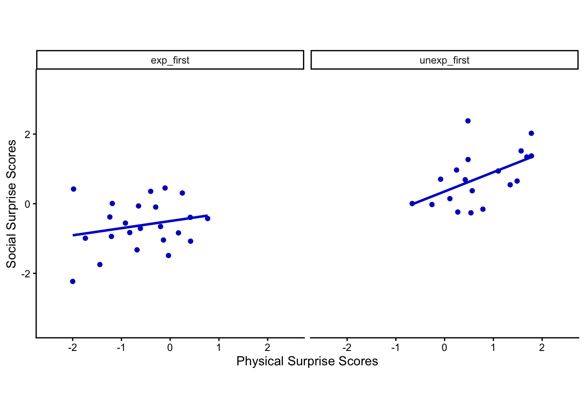
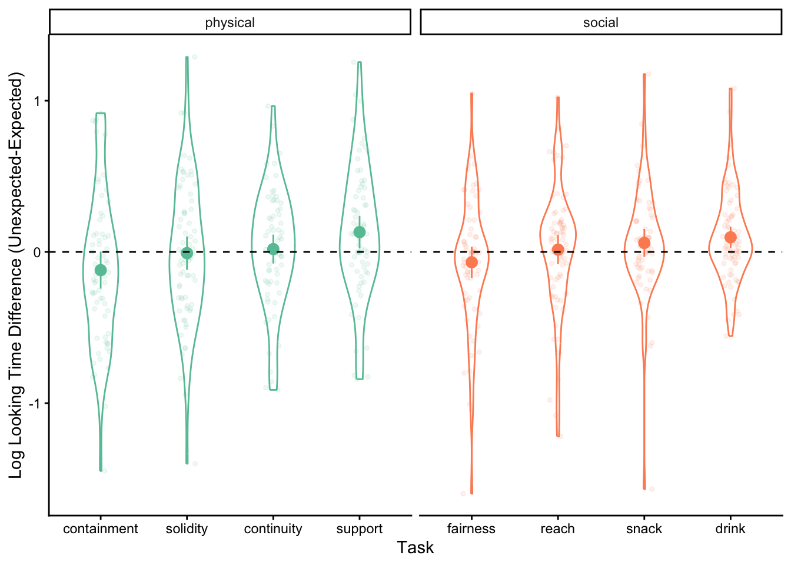
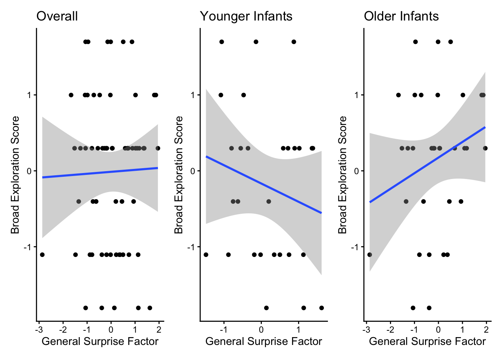

library(here)
library(tidyverse)
library(lavaan)
library(cowplot)
library(car)
library(effectsize)
library(patchwork)
library(RColorBrewer)A reanalysis of ‘Infants’ Domain-General Responses to Expectancy Violations’
Introduction
This is a reanalysis of Bisbee & Feigenson (2026), focusing on the fact that infants were not randomly assigned to always either see surprising outcomes first (for all 8 VOE events) or always see unexpected outcomes. This has important consequences for the interpretation of individual differences in the paper. The upshot is that what are interpreted as individual differences in the paper are mostly measurements of whether infants were assigned to see surprising outcomes first or expected outcomes first: Infants who saw surprising test trials first look longer to surprising events, infants who saw expected test trials first tend to look longer at expected events, and this explains most of the systematic variance across individuals. In other words, variation in looking time differences is explained by order effects.
Setup
This setup code chunk just follows the code (helpfully shared) from the original paper, reading in the primary VOE data and applying exclusion criteria and transformations from the paper.
First, I add a chunk adapted from the original code for processing the raw data into the primary data for analysis. Download the raw_voe_data.csv file from the OSF repository and place it in the data folder to run this step. Or, skip it and move straight to the next chunk.
# Load raw frame-level dataset
raw_voe_data <- read_csv(here("data", "raw_voe_data.csv"))
# Aggregate to trial-level means for each subject/scene/outcome
primary_voe_data_intermediate <- raw_voe_data %>%
group_by(subj, age_months, gender, eu_order, domain, scene, outcome, test) %>%
summarize(look = mean(look, na.rm = TRUE)) %>%
ungroup() %>%
spread(test, look) %>%
dplyr::select(
subject = subj,
age_months,
gender,
outcome_order = eu_order,
domain,
task = scene,
outcome,
familiarization = fam,
test_window = test
)
#save primary data file
write_csv(primary_voe_data_intermediate, here("data", "primary_voe_data_intermediate.csv"))Read in the intermediate data file and apply exclusion criteria from the paper (using code from the original paper’s code base, lightly modified to retain additional variables).
primary_voe_data_intermediate <- read_csv(here("data", "primary_voe_data_intermediate.csv"))Rows: 1350 Columns: 9
── Column specification ────────────────────────────────────────────────────────
Delimiter: ","
chr (5): gender, outcome_order, domain, task, outcome
dbl (4): subject, age_months, familiarization, test_window
ℹ Use `spec()` to retrieve the full column specification for this data.
ℹ Specify the column types or set `show_col_types = FALSE` to quiet this message.# Retain only trials where infants looked at least 50% of the familiarization phase
primary_voe_data_fam_excl <- primary_voe_data_intermediate %>%
filter(familiarization > 0.5) %>%
dplyr::select(-familiarization) # Drop column after filter
# Compute log-looking time to normalize skew and reduce influence of long looks
# - Trials must exceed 5s minimum looking time
# - Compute difference score: unexpected - expected
window_size_s <- 30 # Freeze frame duration per test trial (in seconds)
minimum_looking_time <- 5 # Minimum threshold (in seconds)
primary_voe_data_look_excl <- primary_voe_data_fam_excl %>%
mutate(look = log(window_size_s * test_window),
look_raw = window_size_s * test_window) %>% #edit here to preserve raw looking time
dplyr::select(-test_window) %>%
filter(look > log(minimum_looking_time)) # Exclude very low-looking trials
# e. Compute difference between looking to unexpected and expected outcomes
primary_voe_data <- primary_voe_data_look_excl %>%
#slight modification of original script: pivot both look and look_raw to wide format
pivot_wider(names_from = outcome, values_from = c(look, look_raw)) %>%
mutate(
diff_log = look_unexpected - look_expected,
diff_raw = look_raw_unexpected - look_raw_expected) %>%
na.omit() %>%
ungroup()Observation: 1 Trial order (expected first or unexpected first) has a very large effect on looking time
Trial Order Effect (by task)
The first descriptive thing to observe is just that expected first/ unexpected first has a large effect on the VOE effect: infants who (always) see expected events first look much longer to expected test trials (i.e., the first trial); infants who see unexpected events first look much longer to unexpected test trials. This is true for all events in the paper. This makes sense: we should expect infants (on average) to look much longer to the first test trial than the second (perceptually very similar) trial within a given VOE event. The analyses in the paper do not take this large source of between-infant variance into account.
#summarize data for each VOE event by expected first vs. unexpected first
summarize_task_outcome_order <- primary_voe_data %>%
group_by(domain,task, outcome_order) %>%
summarize(
n = n(),
mean_diff_log = mean(diff_log),
mean_diff_raw = mean(diff_raw),
#95% CIs (quick approx)
ci_diff_log = 1.96 * sd(diff_log) / sqrt(n),
ci_diff_raw = 1.96 * sd(diff_raw) / sqrt(n),
.groups = "drop")ggplot(summarize_task_outcome_order, aes(x = outcome_order, y = mean_diff_log, fill = outcome_order,color=outcome_order)) +
geom_bar(stat = "identity", position = "dodge") +
geom_jitter(data=primary_voe_data,aes(y = diff_log), width = 0.1,height=0, alpha = 0.1)+
geom_errorbar(aes(ymin = mean_diff_log - ci_diff_log, ymax = mean_diff_log + ci_diff_log), width = 0, color="black") +
facet_wrap(~ domain+task,ncol=4) +
#rename x-levels
scale_x_discrete(labels = c("exp_first" = "Exp.\nFirst", "unexp_first" = "Unexp.\nFirst")) +
labs(x = "Outcome Order",
y = "VOE Effect (Unexpected - Expected Log Looking)") +
geom_hline(yintercept = 0, linetype = "dashed", color = "black") +
theme_cowplot()+
theme(legend.position="none")
Trial Order Effect (overall)
The plot above breaks this down by task, but just to emphasize that this effect is quite large, here’s a plot showing the effect summarizing across all VOE events, collapsing across domain and task.
#summarize data for each VOE event by expected first vs. unexpected first
ggplot(summarize_order, aes(x = outcome_order, y = group_avg_diff_log, fill = outcome_order,color=outcome_order)) +
geom_violin(data=summarize_subj_order,aes(y = mean_diff_log),fill=NA) +
geom_jitter(data=summarize_subj_order,aes(y = mean_diff_log), width = 0.1,height=0, alpha = 0.1)+
geom_point(size=3) +
geom_errorbar(aes(ymin = group_avg_diff_log - ci_diff_log, ymax = group_avg_diff_log + ci_diff_log), width = 0) +
scale_x_discrete(labels = c("exp_first" = "Expected First", "unexp_first" = "Unexpected First")) +
labs(x = "Outcome Order",
y = "VOE Effect (Unexpected - Expected Log Looking)") +
geom_hline(yintercept = 0, linetype = "dashed", color = "black") +
theme_cowplot()+
theme(legend.position="none")
#compute cohen's d
cohens_d(mean_diff_log ~ outcome_order, data = summarize_subj_order)Cohen's d | 95% CI
--------------------------
-1.94 | [-2.45, -1.42]
- Estimated using pooled SD.The effect is extremely large, Cohen’s d = -1.94.
#in raw looking time, just to have a feel
ggplot(summarize_order, aes(x = outcome_order, y = group_avg_diff_raw, fill = outcome_order,color=outcome_order)) +
geom_violin(data=summarize_subj_order,aes(y = mean_diff_raw),fill=NA) +
geom_jitter(data=summarize_subj_order,aes(y = mean_diff_raw), width = 0.1,height=0, alpha = 0.1)+
geom_point(size=3) +
geom_errorbar(aes(ymin = group_avg_diff_raw - ci_diff_raw, ymax = group_avg_diff_raw + ci_diff_raw), width = 0) +
scale_x_discrete(labels = c("exp_first" = "Expected First", "unexp_first" = "Unexpected First")) +
labs(x = "Outcome Order",
y = "VOE Effect (Unexpected - Expected Raw Looking)") +
geom_hline(yintercept = 0, linetype = "dashed", color = "black") +
theme_cowplot()+
theme(legend.position="none")
#compute cohen's d
cohens_d(mean_diff_raw ~ outcome_order, data = summarize_subj_order)Cohen's d | 95% CI
--------------------------
-2.17 | [-2.70, -1.63]
- Estimated using pooled SD.The effect is extremely large, Cohen’s d = -2.17.
Observation 2: The latent factor in the CFA appears mostly (if not entirely) to be capturing variation due to assigned order.
The core worry is that the single-factor emerging from the CFA analysis is mainly tracking whether infants were assigned to unexpected-first or expected-first orders (since this structures variation in looking time).
I first re-fit the original model, which revealed a latent, single factor underlying variation. I then pursue several different strategies to try to understand to what extent the latent factor (interpreted as a general surprise factor in the paper) is explained by the order confound. I tried a few different approaches here, because it’s not quite clear to me whether there was a “best” way to understand to what extent the latent factor is (just) an artifact of the order confound. Triangulating across these three approaches, it seems like the answer is yes: The latent factor is mostly if not entirely capturing variation due to assigned order.
To what extent does assigned order explain variation in the latent factor (fitting a MIMIC model)?
Does a latent factor emerge after residualizing looking for each task on order?
Estimating individual scores for the latent variable and regressing them on outcome order (less good than the MIMIC model because of attenuation due to measurement reliability).
0. Original (Single-Factor) Model
I can first reproduce the original model, using the code from the paper (great!).
dat.lav <- primary_voe_data %>%
dplyr::select(subject, outcome_order,task, age_months, diff_log) %>%
group_by(task) %>%
mutate(diff_log = scale(diff_log)) %>% # z-score within task
spread(task, diff_log)
#fit 1-factor CFA model
model_gen <- 'gen_factor =~ continuity + support + solidity + containment + reach + snack + drink + fairness'
fit1.lav <- cfa(model_gen, missing = "FIML", estimator = "MLR", data = dat.lav, std.lv = TRUE)
#summarize original 1-factor model
summary(fit1.lav)lavaan 0.6-21 ended normally after 17 iterations
Estimator ML
Optimization method NLMINB
Number of model parameters 24
Number of observations 86
Number of missing patterns 39
Model Test User Model:
Standard Scaled
Test Statistic 20.348 20.898
Degrees of freedom 20 20
P-value (Chi-square) 0.436 0.403
Scaling correction factor 0.974
Yuan-Bentler correction (Mplus variant)
Parameter Estimates:
Standard errors Sandwich
Information bread Observed
Observed information based on Hessian
Latent Variables:
Estimate Std.Err z-value P(>|z|)
gen_factor =~
continuity 0.249 0.178 1.398 0.162
support 0.355 0.286 1.244 0.213
solidity 0.530 0.194 2.732 0.006
containment 0.627 0.167 3.759 0.000
reach 0.429 0.209 2.050 0.040
snack 0.488 0.273 1.786 0.074
drink 0.405 0.192 2.107 0.035
fairness 0.425 0.139 3.067 0.002
Intercepts:
Estimate Std.Err z-value P(>|z|)
.continuity 0.008 0.119 0.064 0.949
.support -0.010 0.124 -0.082 0.935
.solidity -0.018 0.118 -0.156 0.876
.containment 0.020 0.124 0.160 0.873
.reach 0.009 0.116 0.076 0.940
.snack -0.033 0.126 -0.261 0.794
.drink 0.000 0.114 0.000 1.000
.fairness 0.003 0.119 0.023 0.982
Variances:
Estimate Std.Err z-value P(>|z|)
.continuity 0.925 0.198 4.683 0.000
.support 0.864 0.222 3.894 0.000
.solidity 0.721 0.214 3.368 0.001
.containment 0.619 0.229 2.703 0.007
.reach 0.809 0.198 4.081 0.000
.snack 0.757 0.218 3.465 0.001
.drink 0.822 0.229 3.588 0.000
.fairness 0.803 0.202 3.973 0.000
gen_factor 1.000 fitMeasures(fit1.lav, c("cfi.robust", "tli.robust", "rmsea.robust", "srmr", "aic", "bic")) cfi.robust tli.robust rmsea.robust srmr aic bic
0.981 0.974 0.023 0.092 1561.576 1620.480 #semTools::reliability(fit1.lav, what = c("alpha", "omega", "ave"))1. MIMIC model
I next fit a “MIMIC” model, in which I fit the same CFA/ measurement model, and add a structural model in which outcome_order predicts the latent factor. To the extent to which outcome order explains most (if not all) of the variance in the latent factor, this suggests that the latent factor (interpreted as a “general surprise” factor) is better interpreted as an “assigned order” factor. The upshot of this model is that outcome order explains ~85% of the variance in the latent “domain-general surprise sensitivity”. In other words, this model confirms that the latent factor is best understood as an “assigned order” factor.
model_mimic <- '
gen_factor =~ continuity + support + solidity + containment + reach + snack + drink + fairness
gen_factor ~ outcome_order
'
fit_mimic <- sem(model_mimic, data = dat.lav, estimator = "MLR", missing = "fiml")
summary(fit_mimic, standardized = TRUE, rsquare = TRUE)lavaan 0.6-21 ended normally after 72 iterations
Estimator ML
Optimization method NLMINB
Number of model parameters 25
Number of observations 86
Number of missing patterns 39
Model Test User Model:
Standard Scaled
Test Statistic 28.110 27.730
Degrees of freedom 27 27
P-value (Chi-square) 0.405 0.425
Scaling correction factor 1.014
Yuan-Bentler correction (Mplus variant)
Parameter Estimates:
Standard errors Sandwich
Information bread Observed
Observed information based on Hessian
Latent Variables:
Estimate Std.Err z-value P(>|z|) Std.lv Std.all
gen_factor =~
continuity 1.000 0.249 0.251
support 1.863 1.088 1.712 0.087 0.464 0.466
solidity 1.810 1.026 1.764 0.078 0.451 0.454
containment 1.838 1.090 1.686 0.092 0.458 0.459
reach 1.993 1.141 1.746 0.081 0.497 0.500
snack 1.048 0.722 1.451 0.147 0.261 0.263
drink 1.958 1.154 1.697 0.090 0.488 0.491
fairness 2.001 1.134 1.764 0.078 0.499 0.501
Regressions:
Estimate Std.Err z-value P(>|z|) Std.lv Std.all
gen_factor ~
outcome_order 0.459 0.244 1.879 0.060 1.840 0.920
Intercepts:
Estimate Std.Err z-value P(>|z|) Std.lv Std.all
.continuity -0.677 0.375 -1.806 0.071 -0.677 -0.681
.support -1.318 0.366 -3.600 0.000 -1.318 -1.325
.solidity -1.226 0.323 -3.791 0.000 -1.226 -1.234
.containment -1.235 0.339 -3.643 0.000 -1.235 -1.238
.reach -1.341 0.344 -3.895 0.000 -1.341 -1.351
.snack -0.744 0.313 -2.375 0.018 -0.744 -0.750
.drink -1.330 0.327 -4.073 0.000 -1.330 -1.338
.fairness -1.340 0.312 -4.296 0.000 -1.340 -1.346
Variances:
Estimate Std.Err z-value P(>|z|) Std.lv Std.all
.continuity 0.925 0.189 4.893 0.000 0.925 0.937
.support 0.774 0.144 5.395 0.000 0.774 0.782
.solidity 0.785 0.172 4.556 0.000 0.785 0.794
.containment 0.786 0.163 4.822 0.000 0.786 0.789
.reach 0.738 0.141 5.237 0.000 0.738 0.750
.snack 0.917 0.340 2.698 0.007 0.917 0.931
.drink 0.751 0.194 3.877 0.000 0.751 0.759
.fairness 0.742 0.184 4.031 0.000 0.742 0.749
.gen_factor 0.010 0.015 0.628 0.530 0.153 0.153
R-Square:
Estimate
continuity 0.063
support 0.218
solidity 0.206
containment 0.211
reach 0.250
snack 0.069
drink 0.241
fairness 0.251
gen_factor 0.847lavInspect(fit_mimic, "rsquare") continuity support solidity containment reach snack
0.063 0.218 0.206 0.211 0.250 0.069
drink fairness gen_factor
0.241 0.251 0.847 2. Residualized model
An alternate way to dig into the effect of outcome order is to try to remove the effect of outcome order on looking on each task (via residualizing), and then refit the CFA model on residualized looking (i.e., after accounting for outcome order). I fit this model below. The model technically converges, but the general factor variance is now basically indistinguishable from zero (.001, 95% CI [-.029, .032]). The factor laodings are now all over the place - I think this is just a consequence of the shared variance being so, so small (so now the factor loading estimates are super unstable). The upshot seems to be that we can’t successfully identify a common factor after partialling out the effect of infants’ assigned order on looking time differences.
#create a dataset
df_resid <- dat.lav %>%
mutate(across(c(continuity, support, solidity, containment, reach, snack, drink, fairness),
~ resid(lm(.x ~ outcome_order, data = dat.lav, na.action = na.exclude)),
.names = "{.col}_r"))
#fit CFA model
model_resid <- '
gen_factor =~ continuity_r + support_r + solidity_r + containment_r + reach_r + snack_r + drink_r + fairness_r
'
fit_resid <- cfa(model_resid, data = df_resid, estimator = "MLR", missing = "fiml")
#inspect model/fit results
summary(fit_resid, fit.measures = TRUE, standardized = TRUE,rsquare=TRUE)lavaan 0.6-21 ended normally after 154 iterations
Estimator ML
Optimization method NLMINB
Number of model parameters 24
Number of observations 86
Number of missing patterns 39
Model Test User Model:
Standard Scaled
Test Statistic 14.353 17.246
Degrees of freedom 20 20
P-value (Chi-square) 0.812 0.637
Scaling correction factor 0.832
Yuan-Bentler correction (Mplus variant)
Model Test Baseline Model:
Test statistic 28.707 28.426
Degrees of freedom 28 28
P-value 0.427 0.442
Scaling correction factor 1.010
User Model versus Baseline Model:
Comparative Fit Index (CFI) 1.000 1.000
Tucker-Lewis Index (TLI) 12.180 10.040
Robust Comparative Fit Index (CFI) 1.000
Robust Tucker-Lewis Index (TLI) 2.625
Loglikelihood and Information Criteria:
Loglikelihood user model (H0) -720.820 -720.820
Scaling correction factor 1.444
for the MLR correction
Loglikelihood unrestricted model (H1) -713.644 -713.644
Scaling correction factor 1.166
for the MLR correction
Akaike (AIC) 1489.640 1489.640
Bayesian (BIC) 1548.544 1548.544
Sample-size adjusted Bayesian (SABIC) 1472.823 1472.823
Root Mean Square Error of Approximation:
RMSEA 0.000 0.000
90 Percent confidence interval - lower 0.000 0.000
90 Percent confidence interval - upper 0.059 0.085
P-value H_0: RMSEA <= 0.050 0.925 0.797
P-value H_0: RMSEA >= 0.080 0.015 0.064
Robust RMSEA 0.000
90 Percent confidence interval - lower 0.000
90 Percent confidence interval - upper 0.096
P-value H_0: Robust RMSEA <= 0.050 0.809
P-value H_0: Robust RMSEA >= 0.080 0.090
Standardized Root Mean Square Residual:
SRMR 0.076 0.076
Parameter Estimates:
Standard errors Sandwich
Information bread Observed
Observed information based on Hessian
Latent Variables:
Estimate Std.Err z-value P(>|z|) Std.lv Std.all
gen_factor =~
continuity_r 1.000 0.036 0.038
support_r -4.126 24.454 -0.169 0.866 -0.150 -0.168
solidity_r 16.812 92.297 0.182 0.855 0.613 0.653
containment_r 11.565 71.525 0.162 0.872 0.422 0.465
reach_r -6.480 41.423 -0.156 0.876 -0.236 -0.268
snack_r 14.696 94.024 0.156 0.876 0.536 0.553
drink_r -0.179 3.783 -0.047 0.962 -0.007 -0.007
fairness_r 4.293 31.811 0.135 0.893 0.156 0.179
Intercepts:
Estimate Std.Err z-value P(>|z|) Std.lv Std.all
.continuity_r -0.000 0.118 -0.002 0.998 -0.000 -0.000
.support_r 0.000 0.110 0.002 0.998 0.000 0.000
.solidity_r -0.050 0.107 -0.471 0.638 -0.050 -0.053
.containment_r 0.039 0.109 0.359 0.720 0.039 0.043
.reach_r 0.006 0.104 0.054 0.957 0.006 0.006
.snack_r -0.008 0.113 -0.066 0.947 -0.008 -0.008
.drink_r 0.000 0.103 0.000 1.000 0.000 0.000
.fairness_r -0.004 0.107 -0.040 0.968 -0.004 -0.005
Variances:
Estimate Std.Err z-value P(>|z|) Std.lv Std.all
.continuity_r 0.934 0.185 5.043 0.000 0.934 0.999
.support_r 0.783 0.153 5.131 0.000 0.783 0.972
.solidity_r 0.505 0.415 1.215 0.224 0.505 0.573
.containment_r 0.644 0.181 3.557 0.000 0.644 0.784
.reach_r 0.722 0.153 4.734 0.000 0.722 0.928
.snack_r 0.652 0.191 3.415 0.001 0.652 0.694
.drink_r 0.788 0.193 4.073 0.000 0.788 1.000
.fairness_r 0.741 0.152 4.866 0.000 0.741 0.968
gen_factor 0.001 0.016 0.086 0.932 1.000 1.000
R-Square:
Estimate
continuity_r 0.001
support_r 0.028
solidity_r 0.427
containment_r 0.216
reach_r 0.072
snack_r 0.306
drink_r 0.000
fairness_r 0.032fitMeasures(fit_resid, c("cfi.robust", "tli.robust", "rmsea.robust", "srmr", "aic", "bic")) cfi.robust tli.robust rmsea.robust srmr aic bic
1.000 2.625 0.000 0.076 1489.640 1548.544 parameterEstimates(fit_resid) %>% filter(lhs == "gen_factor", op == "~~") # factor variance lhs op rhs est se z pvalue ci.lower ci.upper
1 gen_factor ~~ gen_factor 0.001 0.016 0.086 0.932 -0.029 0.0323. Predicting estimated latent scores from outcome order
Here, I add another (probably dispreferred, but perhaps simpler) way to interrogate the extent to which the latent factor reflects outcome order. I extract estimates of the latent factor for individuals from the original CFA model. I then predict these individual estimates from outcome order. The analysis again finds that assigned order explains a vast amount of the variance in the latent factor (r squared = 0.44). Note that the variance explained is at the same time substantially lower than for Approach 1 (0.44 vs. 0.85). I think this makes sense from a psychometric perspective, however, because of attenuation bias due to measurement unreliability. The MIMIC model estimates the variance explained directly from the measurement model, whereas in the approach below, we are correlating outcome order with (noisy) estimates of the individual scores. Because reliability of the general surprise factor is modest/ medium (~.66, see estimate above), the R2 naturally shrinks due to the additional noise. I think the MIMIC model is probably strictly the better approach here, but I report all three approaches I tried for transparency/ to give a more complete picture.
#extract individual estimates of general factor scores from the CFA model
fs <- lavPredict(fit1.lav, method = "Bartlett") # from the original CFA fit
dat.lav$gen_factor_score <- fs[, "gen_factor"]
#how much variation does outcome order explain?
summary(lm(gen_factor_score ~ outcome_order, data = dat.lav))
Call:
lm(formula = gen_factor_score ~ outcome_order, data = dat.lav)
Residuals:
Min 1Q Median 3Q Max
-3.8524 -0.5447 0.0327 0.7137 1.8400
Coefficients:
Estimate Std. Error t value Pr(>|t|)
(Intercept) -0.8775 0.1502 -5.841 9.52e-08 ***
outcome_orderunexp_first 1.7416 0.2125 8.197 2.44e-12 ***
---
Signif. codes: 0 '***' 0.001 '**' 0.01 '*' 0.05 '.' 0.1 ' ' 1
Residual standard error: 0.9851 on 84 degrees of freedom
Multiple R-squared: 0.4444, Adjusted R-squared: 0.4378
F-statistic: 67.2 on 1 and 84 DF, p-value: 2.44e-12Summary
Triangulating across three approaches, it appears clear that the estimated latent factor in the CFA analysis is largely driven by and almost entirely accounted for by infants’ assigned order (~85% of the variance in the MIMIC model; there is little to explain once outcome order is regressed out of looking).
Observation 3: Correlations do not generally hold when outcome order is taken into account
Original Correlations
First, I reproduce the correlation plots demonstrating the relationship between looking time differences for social tasks vs. physical tasks, reported in the original paper (Figure 3).
Two notes:
the median age is reported as 17.9 months in the paper, but I get 20.3 months (also when I run the original script or when I just inspect the primary_voe_data object post exclusions).
It appears that some additional data might have been excluded to create the exact plots in Figure 3. Or it looks like some points might be cut off in the Figures in the paper? I couldn’t track down which data might be excluded based on the scripts provided.
Regardless, the general patterns hold true:
There is an overall correlation of the VOE effects for the social vs. the physical domain.
Both younger and older infants show evidence of a correlation, but the correlation becomes much stronger for older infants.
#data approach from the paper (adding outcome order)
dat.cross <- primary_voe_data %>%
group_by(subject, age_months,outcome_order,domain) %>%
summarize(diff.m = mean(diff_log, na.rm = TRUE)) %>%
spread(domain, diff.m) %>%
na.omit() %>%
ungroup() %>%
mutate(
age.z = scale(age_months),
physical = scale(physical),
social = scale(social)
)
median_age <- median(dat.cross$age_months)overall <- dat.cross %>%
ggplot(aes(x = scale(physical), y = social)) +
geom_point(color = "blue2") +
geom_smooth(method = 'lm', se = FALSE, color = "blue2") +
labs(x = "Physical Surprise Scores", y = "Social Surprise Scores") +
theme_classic() +
theme(aspect.ratio = 1) +
xlim(-2.5, 2.5) + ylim(-3.5,3.5)
overall
# Younger infants (< median age)
younger <- dat.cross %>%
filter(age_months <= median_age) %>%
ggplot(aes(x = scale(physical), y = social)) +
geom_point(color = "blue2") +
geom_smooth(method = 'lm', se = FALSE, color = "blue2") +
labs(x = "Physical Surprise Scores", y = "Social Surprise Scores") +
theme_classic() +
theme(aspect.ratio = 1) +
xlim(-2.5, 2.5) + ylim(-3.5, 3.5) #scaling issue???// exclusions different from paper?
younger
# Older infants (> median age)
older <- dat.cross %>%
filter(age_months > median_age) %>%
ggplot(aes(x = scale(physical), y = scale(social))) +
geom_point(color = "blue3") +
geom_smooth(method = 'lm', se = FALSE, color = "blue3") +
labs(x = "Physical Surprise Scores", y = "Social Surprise Scores") +
theme_classic() +
theme(aspect.ratio = 1) +
xlim(-2.5, 2.5) + ylim(-3.5, 3.5)
older
Correlations split by outcome order
First, observe the distribution of expected-first vs. unexpected-first infants in the overall correlation plot. We can see that at least a large amount of the covariance is due to order: expected-first infants show lower looking time differences (longer looking to the expected trial, which is their first trial) in both domains, unexpected-first infants show higher looking time differences (longer looking to the unexpected trial, which is their first trial).
overall_order_color <- dat.cross %>%
ggplot(aes(x = scale(physical), y = social,color=outcome_order)) +
geom_point() +
geom_smooth(method = 'lm', se = FALSE, color = "blue2") +
labs(x = "Physical Surprise Scores", y = "Social Surprise Scores") +
theme_classic() +
theme(aspect.ratio = 1) +
xlim(-2.5, 2.5) + ylim(-3.5,3.5)+
theme(legend.position = c(0.2,0.9))
overall_order_color
Now, I look at the correlations splitting by the (assigned) expected-first or unexpected-first order. Are there any correlations after removing variance (in the surprisal score) due to assigned order? There appears to be much less systematic variance after splitting the data. There is perhaps some sign of a correlation among older infants in the unexpected-first group (r=.52), but not in the expected-first group. Younger infants show no evidence of systematic covariation.
overall_order_split <- dat.cross %>%
ggplot(aes(x = scale(physical), y = social)) +
geom_point(color = "blue2") +
geom_smooth(method = 'lm', se = FALSE, color = "blue2") +
labs(x = "Physical Surprise Scores", y = "Social Surprise Scores") +
theme_classic() +
theme(aspect.ratio = 1) +
xlim(-2.5, 2.5) + ylim(-3.5,3.5)+
facet_wrap(~outcome_order)
overall_order_split
# Younger infants (< median age)
younger_order_split <- dat.cross %>%
filter(age_months <= median_age) %>%
ggplot(aes(x = scale(physical), y = social)) +
geom_point(color = "blue2") +
geom_smooth(method = 'lm', se = FALSE, color = "blue2") +
labs(x = "Physical Surprise Scores", y = "Social Surprise Scores") +
theme_classic() +
theme(aspect.ratio = 1) +
xlim(-2.5, 2.5) + ylim(-3.5, 3.5) +
facet_wrap(~outcome_order)
younger_order_split
#expected first
cor.test(filter(dat.cross,age_months<=median_age&outcome_order=="exp_first")$physical,filter(dat.cross,age_months<=median_age&outcome_order=="exp_first")$social)
Pearson's product-moment correlation
data: filter(dat.cross, age_months <= median_age & outcome_order == "exp_first")$physical and filter(dat.cross, age_months <= median_age & outcome_order == "exp_first")$social
t = -0.39843, df = 18, p-value = 0.695
alternative hypothesis: true correlation is not equal to 0
95 percent confidence interval:
-0.5147228 0.3640862
sample estimates:
cor
-0.0934987 #unexpected first
cor.test(filter(dat.cross,age_months<=median_age&outcome_order=="unexp_first")$physical,filter(dat.cross,age_months<=median_age&outcome_order=="unexp_first")$social)
Pearson's product-moment correlation
data: filter(dat.cross, age_months <= median_age & outcome_order == "unexp_first")$physical and filter(dat.cross, age_months <= median_age & outcome_order == "unexp_first")$social
t = 0.22512, df = 22, p-value = 0.824
alternative hypothesis: true correlation is not equal to 0
95 percent confidence interval:
-0.3624657 0.4427746
sample estimates:
cor
0.04794083 # Older infants (> median age)
older_order_split <- dat.cross %>%
filter(age_months > median_age) %>%
ggplot(aes(x = scale(physical), y = scale(social))) +
geom_point(color = "blue3") +
geom_smooth(method = 'lm', se = FALSE, color = "blue3") +
labs(x = "Physical Surprise Scores", y = "Social Surprise Scores") +
theme_classic() +
theme(aspect.ratio = 1) +
xlim(-2.5, 2.5) + ylim(-3.5, 3.5)+
facet_wrap(~outcome_order)
older_order_split
#expected first
cor.test(filter(dat.cross,age_months > median_age&outcome_order=="exp_first")$physical,filter(dat.cross,age_months > median_age&outcome_order=="exp_first")$social)
Pearson's product-moment correlation
data: filter(dat.cross, age_months > median_age & outcome_order == "exp_first")$physical and filter(dat.cross, age_months > median_age & outcome_order == "exp_first")$social
t = 1.0641, df = 21, p-value = 0.2994
alternative hypothesis: true correlation is not equal to 0
95 percent confidence interval:
-0.2051348 0.5839498
sample estimates:
cor
0.2261937 #unexpected first
cor.test(filter(dat.cross,age_months > median_age&outcome_order=="unexp_first")$physical,filter(dat.cross,age_months > median_age&outcome_order=="unexp_first")$social)
Pearson's product-moment correlation
data: filter(dat.cross, age_months > median_age & outcome_order == "unexp_first")$physical and filter(dat.cross, age_months > median_age & outcome_order == "unexp_first")$social
t = 2.5749, df = 17, p-value = 0.01968
alternative hypothesis: true correlation is not equal to 0
95 percent confidence interval:
0.09939423 0.79308985
sample estimates:
cor
0.5296902 No significant effect after controlling for outcome order
When I fit the regression model predicting physical from social task looking and its interaction with age, but control for outcome order, there is no longer an overall significant effect of social task on physical task looking. The interaction with age is still significant (but a small effect). Outcome order explains a huge proportion of the variance.
mod_int_control <- lm(physical ~ social * age.z + outcome_order, data = dat.cross)
summary(mod_int_control)
Call:
lm(formula = physical ~ social * age.z + outcome_order, data = dat.cross)
Residuals:
Min 1Q Median 3Q Max
-1.94701 -0.53269 -0.06734 0.53819 1.49749
Coefficients:
Estimate Std. Error t value Pr(>|t|)
(Intercept) -0.41587 0.14095 -2.950 0.004148 **
social 0.20212 0.11006 1.836 0.069959 .
age.z -0.06556 0.08800 -0.745 0.458441
outcome_orderunexp_first 0.85523 0.22171 3.857 0.000229 ***
social:age.z 0.23971 0.10352 2.315 0.023117 *
---
Signif. codes: 0 '***' 0.001 '**' 0.01 '*' 0.05 '.' 0.1 ' ' 1
Residual standard error: 0.7964 on 81 degrees of freedom
Multiple R-squared: 0.3955, Adjusted R-squared: 0.3657
F-statistic: 13.25 on 4 and 81 DF, p-value: 2.378e-08anova_mod_int_control <- Anova(mod_int_control, type=3)
anova_mod_int_controlAnova Table (Type III tests)
Response: physical
Sum Sq Df F value Pr(>F)
(Intercept) 5.522 1 8.7052 0.004148 **
social 2.139 1 3.3726 0.069959 .
age.z 0.352 1 0.5550 0.458441
outcome_order 9.438 1 14.8794 0.000229 ***
social:age.z 3.401 1 5.3614 0.023117 *
Residuals 51.379 81
---
Signif. codes: 0 '***' 0.001 '**' 0.01 '*' 0.05 '.' 0.1 ' ' 1Other concerns
Only 2 of the 8 VOE tasks show a significant VOE effect
Only 2 of the 8 VOE tasks show a statistically significant VOE effect. The corresponding t-tests are run in the script on OSF (great!), but they are not reported in the paper. Below is a plot showing the distribution of looking time difference scores for each task.
#compute average looking time difference by task, with 95% CIs
summarized_data <- primary_voe_data %>%
group_by(domain,task) %>%
summarize(
N=n(),
mean_diff = mean(diff_log, na.rm = TRUE),
se_diff = sd(diff_log, na.rm = TRUE) / sqrt(N),
ci_diff = qt(0.975, df = N - 1) * se_diff,
)
#plot
ggplot(summarized_data,aes(x=reorder(task,mean_diff),mean_diff,fill=domain, color=domain))+
geom_jitter(data=primary_voe_data,aes(x=reorder(task,diff_log,mean),y=diff_log),stat="identity", size=1,alpha=0.1,height=0,width=0.1)+
geom_violin(data=primary_voe_data,aes(x=reorder(task,diff_log,mean),y=diff_log),width=0.5,fill=NA)+
geom_point(stat="identity", size=3)+
geom_errorbar(aes(ymin=mean_diff-ci_diff,ymax=mean_diff+ci_diff),width=0)+
geom_hline(yintercept=0,linetype="dashed")+
facet_wrap(~domain, scales="free_x")+
labs(x="Task",y="Log Looking Time Difference (Unexpected-Expected)")+
theme_classic()+
scale_color_brewer(palette="Set2")+
theme(legend.position = "none")
Bayesian model issues
Interpretation of interaction as a main effect
The paper seems to describe a main effect of general surprise scores on broad exploration curiosity scores . E.g., on p. 6: “As predicted, we observed a reliable relationship between infants’ general surprise responses and their later Broad Exploration; this effect was significantly affected by age.” Similarly in the discussion, the paper reads: “Infants’ surprise responses predicted their later Broad Exploration.” However, there is no main effect of surprise on broad exploration: there is only an interaction between age (at VOE task) and general surprise, as reported in Table 1. The general relationship between surprise and broad exploration is negative and non-significant. The plot below illustrates this point.
#create the dataset used in the brms model
emcs_raw <- read.csv(here("data","emcs_raw.csv"))
dat.brms <- left_join(primary_voe_data, emcs_raw, by = c("subject" = "subj")) %>%
ungroup() %>%
mutate(
sociality = scale(emcs_soc),
info_seeking = scale(emcs_seek),
broad_exploration = scale(emcs_exp),
persistence = scale(emcs_per),
vocab_tot = scale(vocab_tot)
) %>%
group_by(subject, age_months, vocab_tot,
broad_exploration, info_seeking,
persistence, sociality, age_surv) %>%
summarize(
gen_factor = mean(diff_log, na.rm = TRUE) # average surprise score per subject
) %>%
na.omit() %>%
ungroup() %>%
mutate(
gen_factor = scale(gen_factor),
age_months.z = scale(age_months),
age_surv.z = scale(age_surv)) %>%
mutate(
age_split = ifelse(age_months.z > 0, "older", "younger")
)
#plot just the simple correlation of broad exploration and general surprise, then split by age
p1 <- ggplot(dat.brms,aes(gen_factor,broad_exploration))+
geom_point()+
geom_smooth(method="lm")+
labs(x = "General Surprise Factor", y= "Broad Exploration Score",title="Overall")+
theme_classic()
p2 <- ggplot(filter(dat.brms,age_split=="younger"),aes(gen_factor,broad_exploration))+
geom_point()+
geom_smooth(method="lm")+
labs(x = "General Surprise Factor", y= "Broad Exploration Score",title="Younger Infants")+
theme_classic()
p3 <- ggplot(filter(dat.brms,age_split=="older"),aes(gen_factor,broad_exploration))+
geom_point()+
geom_smooth(method="lm")+
labs(x = "General Surprise Factor", y= "Broad Exploration Score",title="Older Infants")+
theme_classic()
p1+p2+p3
Note that even among older infants (median-split), there is no effect of “general surprise” on broad exploration (r=.24, non-significant).
cor.test(filter(dat.brms,age_split=="older")$gen_factor, filter(dat.brms,age_split=="older")$broad_exploration)
Pearson's product-moment correlation
data: filter(dat.brms, age_split == "older")$gen_factor and filter(dat.brms, age_split == "older")$broad_exploration
t = 1.3522, df = 31, p-value = 0.1861
alternative hypothesis: true correlation is not equal to 0
95 percent confidence interval:
-0.1167735 0.5358880
sample estimates:
cor
0.2359965 Interaction Model does not include lower-order effects
An additional note is that I’m also worried about the specification of the Bayesian model predicting curiosity scores from general surprise. This also relates to the point above, because the interaction effect in the model can’t be interpreted as a “pure” interaction. The model attempts to interpret an age(voe) by general surprise interaction, but without including all lower-order effects, in particular the effect of age(voe). I suspect this decision was made because there are two age variables (age when the VOE session occurred and age at which the questionnaire was filled out), and this decision is to avoid including both age variables. But, the result is that the “interaction” effect is now a difficult-to-interpret mix of a main effect of age(voe) and an interaction effect.